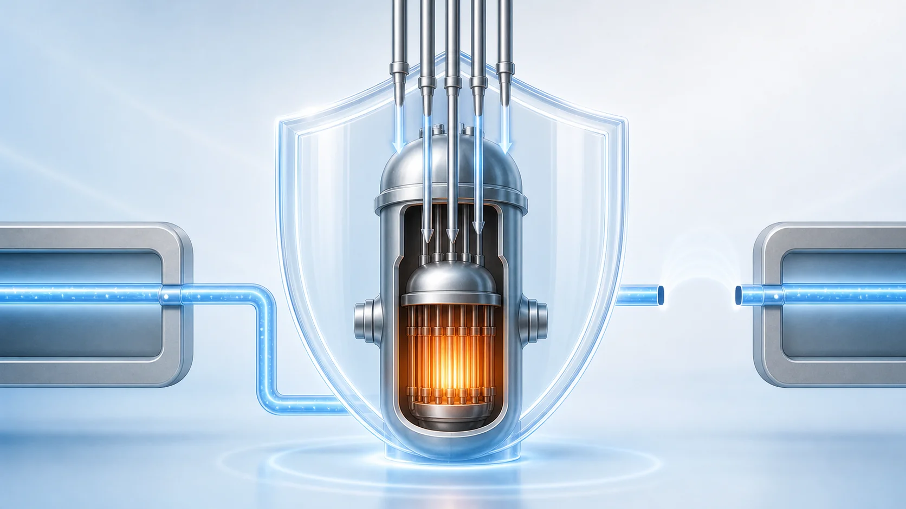
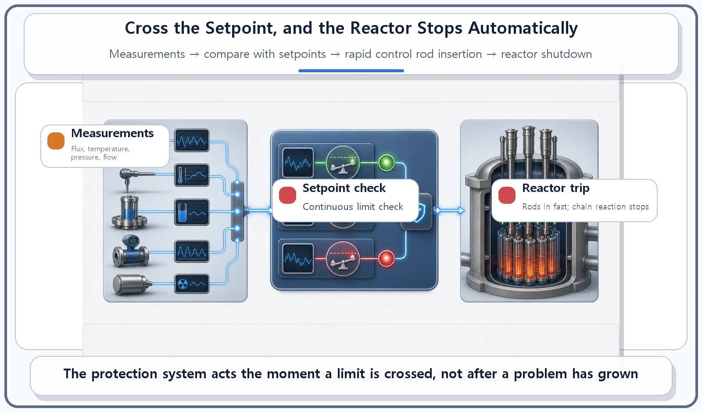
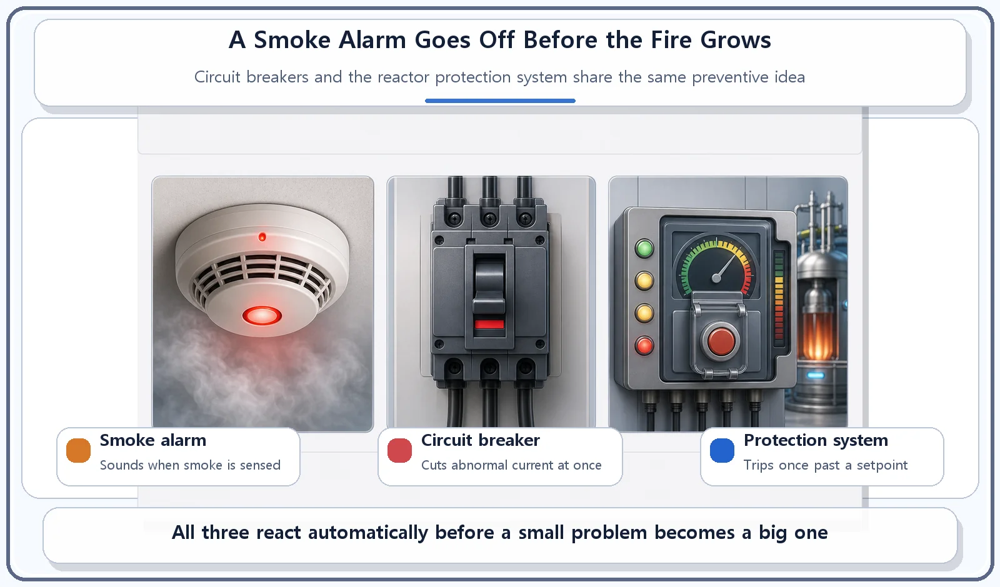

Reactor Components · 069
Sense Danger, Stop at Once — How the Reactor Protection System Works
Like a smoke alarm that sounds before the fire spreads, the protection system shuts the reactor down the moment a measurement crosses its setpoint.

The reactor protection system watches key measurements and shuts the reactor down automatically the moment one crosses its safety limit. It compares neutron flux and coolant temperature, pressure and flow with preset setpoints; if any one is exceeded, the control rods drive rapidly into the core (a reactor trip), without waiting for a human decision.
A smoke alarm sounds before the fire spreads
The smoke alarm on your ceiling doesn't wait until a fire has taken over the kitchen. It goes off the moment the smoke in the air passes a certain level. A circuit breaker works the same way: as soon as current starts flowing abnormally, it cuts the power by itself, often before anyone in the house has noticed a thing. Both are devices that stop trouble before it gets big.
A nuclear power plant is full of sensors that act like its sense organs, constantly measuring what is happening inside. But measuring is only half the job. One part of the plant is built to react to danger signals automatically, without waiting for a human decision. That part is the reactor protection system.
The protection system: cross the setpoint, and it stops
The reactor protection system continuously compares a set of physical quantities gathered by the plant's instrumentation, such as the neutron flux (a measure of how many neutrons are moving through the core), and the coolant's temperature, pressure and flow rate, against safety limits fixed in advance. These limits are called setpoints.
If a measurement goes beyond its setpoint, the protection system does not wait for anyone's judgment. It immediately sends the signal that drives the control rods rapidly into the core, shutting the reactor down. This automatic shutdown is commonly called a reactor trip.
The system is built from several independent signal paths, called channels, so that an error in some of them cannot make the overall decision go wrong. A widely used approach is a kind of vote: the shutdown signal is confirmed only when at least a set number of the channels detect the abnormal condition at the same time. Think of a panel of judges: one judge with a faulty scorecard cannot decide the result alone, yet a problem flagged by enough judges at once is acted on without delay.

So when does it act?
The reactor protection system acts when any one of a number of predefined conditions crosses its setpoint: for example, when the neutron flux in the core rises abnormally high, when the coolant temperature or pressure leaves its set range, or when the coolant flow suddenly drops.
In other words, it is not designed to act after an accident has already happened. It is designed to act the instant early signs appear that the plant is about to leave its normal range. Like a smoke alarm that sounds before the fire spreads, it is a preventive approach: stop first, before the problem has a chance to grow.

Where people get mixed up
The protection system and everyday control-rod adjustments are different jobs. During normal operation, control rods are moved in small steps to fine-tune the reactor's power. That kind of control relies on delayed neutrons, the small share of neutrons released a little while after fission, which slow the reactor's response down enough to be adjusted calmly. That is normal-operation control. The reactor protection system is something else: an emergency response that shuts the whole reactor down at once when a danger signal is detected. Their purpose and the situations in which they act are completely different.
"The protection system acted" does not mean "an accident happened." The protection system is a preventive safety device designed to act on abnormal signs that cross a setpoint, not only on real accidents. The fact that a trip occurred does not, by itself, mean that a major accident took place.
| Everyday control-rod adjustment | Reactor protection system | |
|---|---|---|
| When | Normal operation | When a measurement crosses its setpoint |
| What it does | Fine-tunes the reactor's power in small steps | Shuts the whole reactor down at once (reactor trip) |
| Who decides | Operators and automatic control | Automatic, without waiting for a human decision |
The short version
- The reactor protection system automatically shuts the reactor down when a measured value goes beyond a preset setpoint.
- This automatic shutdown is called a reactor trip, and it works by inserting the control rods rapidly.
- Several independent channels and a voting scheme keep a few faulty signals from swaying the overall decision.
- Like a smoke alarm or a circuit breaker, it acts at the early-warning stage, before a problem grows.
If the plant's sensors are its senses, the reactor protection system is its reflex: fast, automatic, and deliberately quick to act, because stopping early is always the safer choice.